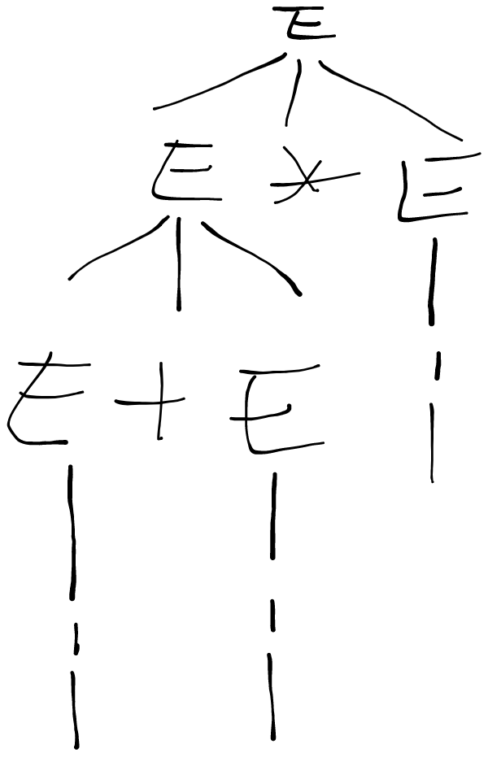

这不赶紧试试
语言定义
- 左递归：
一个a可以产生a开头的句子
结果就是，不方便解析
语义
合法句子的含义，不好形式化描述
文法
一个四元式
:非终结符集合
:终结符集合
:开始符号
:产生式的非空有限集
- 句型：S推导的中间结果，可能没有完全推导
- 句子：S推导的结果，其中都是终结符
- 语言：S推导的所有句子的集合
四种文法(Chomsky体系)
四种文法归类是包含关系，越来越简单容易解析
-
0型文法（短语结构文法）
每个产生式形如，没有约束，任意符号推导任意符号
产生的语言称为0型语言，0型文法的能力相当于图灵机，递归更严格 -
1型文法（上下文相关文法）
每个产生式形如，左边和右边都可以有多个符号，但是右边的符号数大于等于左边（也就是说可以规约到更少的符号）
在解析时需要将多个符号解析为更少个数的符号
生成的1型语言一定是递归集，递归集不一定是1型语言 -
2型文法（上下文无关文法）
产生式形如
左边只有一个非终结符（多个非终结符的组合也算一个），也就是说，式子左边没有非终结符，右边随意（需要满足1型文法）
能力相当于下推自动机 -
3型文法（正则文法，线性文法）
或者
式子左边只能有一个字符，而且必须是非终结符；式子右边最多有二个字符。如果有二个字符必须是（终结符+非终结符）的格式，如果是一个字符，那么必须是终结符。
（左线性：非终结符在左边，右线性：非终结符在右边）
能力相当于有限自动机
语法树
一颗用来表示推导过程的树
- 不要用箭头
- 每个节点只有一个符号

二义性
如果一个文法存在某个句子有多于一个语法树，则称这个文法是二义文法
-
二义文法产生的语言不一定是二义语言
-
二义性问题不可判定（无法证明不是二义的）
-
通过说明某个句子有多于一个语法树来证明二义性
-
这些东西都是相对于一个句型来定义的，通过画出此句型的抽象语法树来求
短语：任一子树叶节点所组成的符号串
直接短语：末端的子树的叶节点（需要优先被规约的符号串）
句柄：最左直接短语（语法树上最左边的那一个直接短语，在某种算法下每次都规约句柄）
素短语：包含至少一个终结符，且是最语法树上最小的（不包含其他的素短语）
最左素短语：最左边的素短语
来个复杂公式